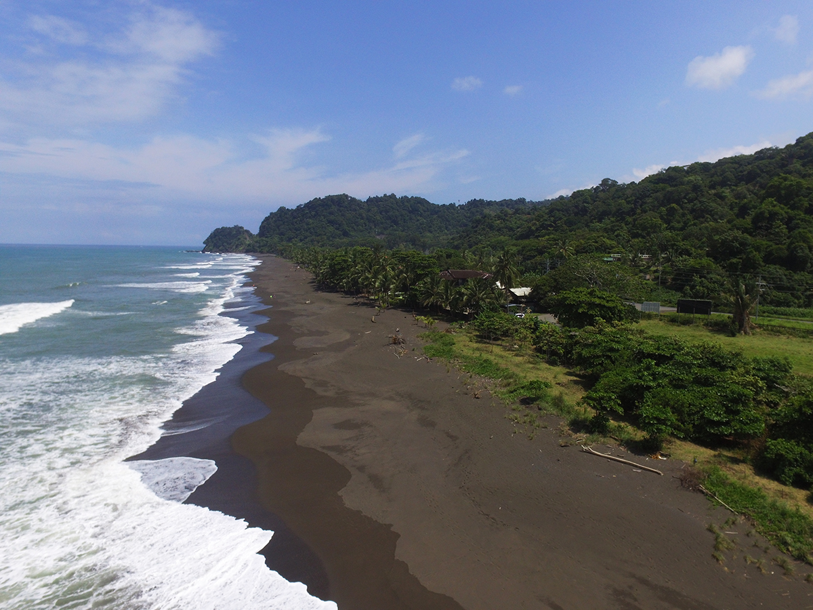
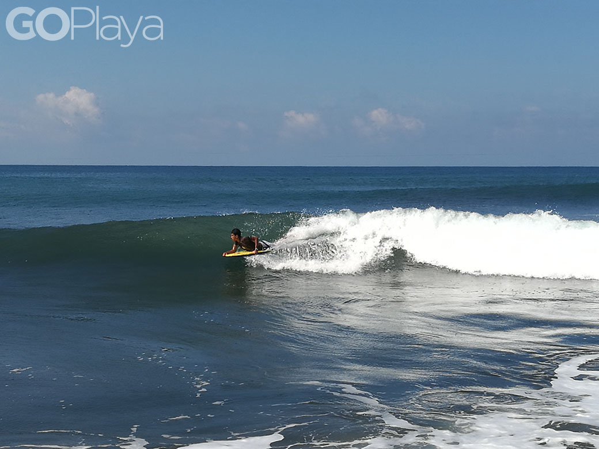
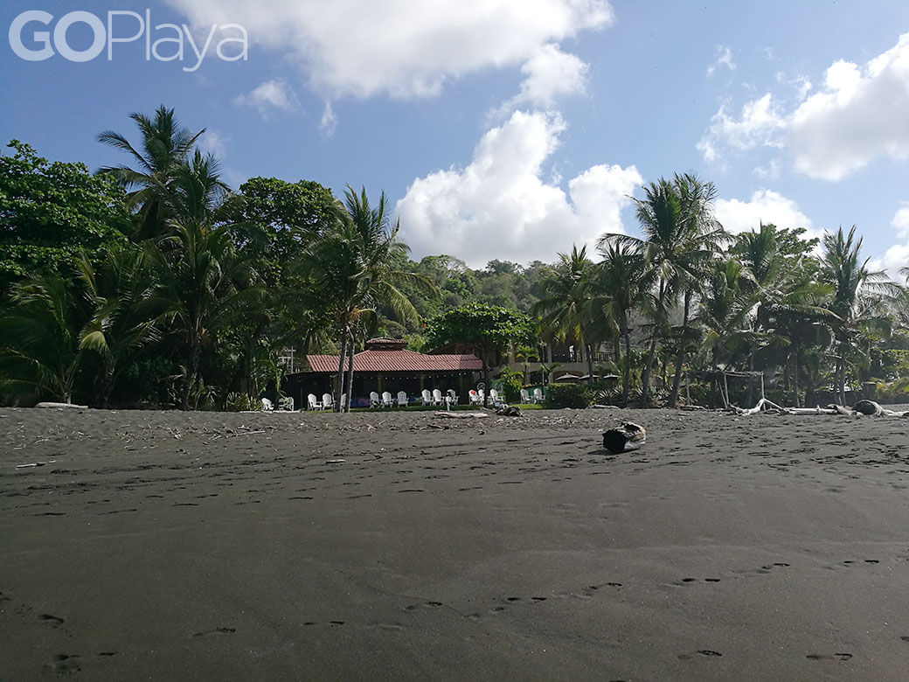

Hermosa es uno de los sitios de playa más populares de Costa Rica. Se ha convertido en el lugar predilecto de decenas de surfistas, que valoran la estabilidad y calidad de las olas. Muy cerca de Jacó, en el cantón de Garabito, esta playa ofrece un sinnúmero de alternativas para aprender a surfear y alquilar tablas. Hermosa es de arena gris y tiene poca piedra. También es un lugar para tomar el sol o descansar.
Playa Hermosa



En playa Hermosa se encuentran las mejores olas de la zona para el suf, tambien hay una amplia oferta hotelera; desde cabinas, casas de alquiler, hasta hosteles.